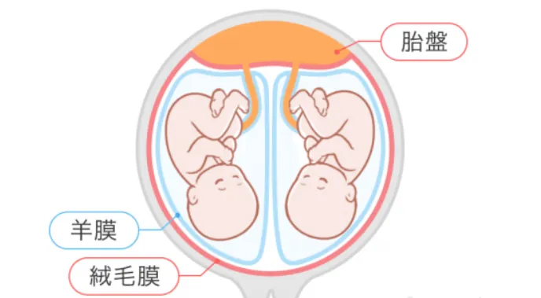
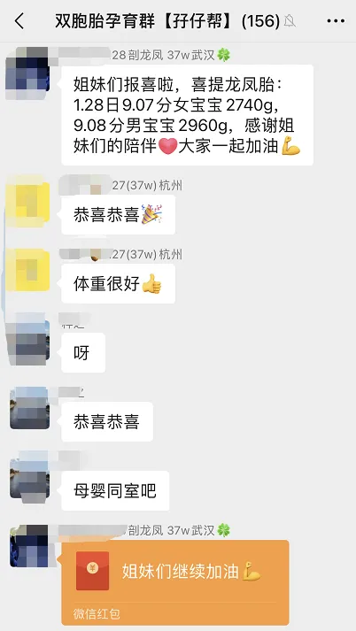
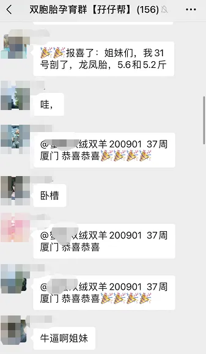
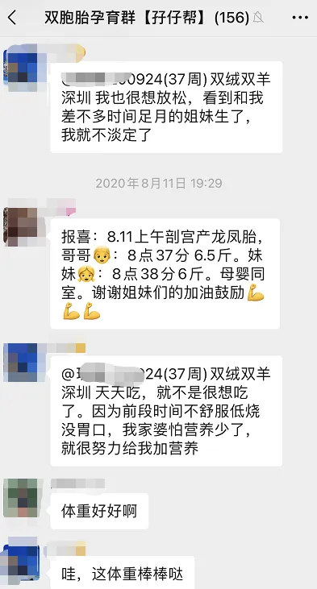
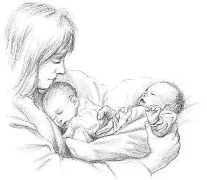

孖仔帮
公众号ID：twinsbang
关注
文|双胞胎姐妹花孖妈
网图|侵删
先插播一则群通知：第8期双胞胎跳蚤市场群已开放，公众号输入“赶集8”，扫码即可入群。
【帮主】圆圈妈妈：这是孖仔帮双胎专栏【孖妈来了】的第14篇文章，是一位97年新手妈妈的投稿，家有双胞胎姐妹花9个月，文字细腻朴实，真真切切地道出了每一位小白双胞胎妈妈，初为人母时那一段不为人知的心路历程。
特别是她那句大实话：“对于双胞胎妈妈来说，不管亲密派，百岁派还是其他无名派 ，都不管用，我只知道，关键时刻，还是自己看着办！”
是的，养育双胞胎的头一年，我最深切的体会就是，不管孕前做了多少功课，把育儿百科全书烂熟于心，只要面对两个同时哭闹不已的小婴儿，所有的一切都是断片的，空白的，凌乱的。
而我唯一能做的只有...原地裂开！
双胞胎姐妹花孖妈：孕7周＋，从B超查出是双胞胎之后，我的身边就经常冒出这样的声音，
“哇，双胞胎，也太幸福了吧，一次搞定！”
刚开始听到时，的确蛮开心的，见多了身边的友人天天为生不生二胎而老泪纵横，深知那种纠结无法用言语形容，而我竟然就这样，莫名其妙就一胎搞定俩，想想就觉得自己超级幸运！
然而孕期越到后面越不喜欢听到这样的话，
因为在【一次解决】之前，怀双胞胎的孕妈妈会面临许多不可预知的风险。
我是单绒双羊，每次看到TTTs和生长受限这些词就会吓到双手颤抖；肚子早孕期就显怀，到了28周就要抱着肚子走路；产检也有很多项目要额外做；每做一次B超就好像等宣判一样惴惴不安，孕后期几乎丧失自理能力。
这就算了，还要被一群自以为是的三姑六婆说教：“要多走动才好生啊，争取顺产啊，以前的大肚婆都这样自己生的。”
真是【未经他人苦，莫劝他人善】
好想请她们试试看肚子里每天扛着一个大浴缸吃饭睡觉走路的滋味...如果可以，谁不想顺产？
与三姑六婆的冒险派不一样的是大部分医生，见我有妊娠高血压，才32周就催我住院保胎待产，一到36周就要赶紧拖去剖。
我不甘心，我还希望再熬久一点，但是两宝好像等不及了，距离36周还有1天，我还没来得及跟医生约手术时间，她们就迫不及待出来了。
是两个小棉袄！果然被三姑六婆的无稽之谈说中了，上怀，肚子圆滚滚的，肯定是女孩。
我祈祷的翻盘没有出现，心里颇有点失望，别吐槽我，我不是重男轻女，我只是更喜欢男孩多一点。
然而，当护士把小小的软糯糯的两只，与我脸贴脸时，我的心都融化了，男孩or女孩已经不重要了，重要的是，从此以后，我生命中多了两个很重要的人。
在我们双胞胎孕育群，顺利卸货体重6斤以上的宝宝是非常值得羡慕的事，只要两宝宝体重有5.5斤以上，群里的双胞胎孕妈，都会纷纷跟帖恭喜留言，体重太棒了，太励志了。
看着前辈们一波接一波正能量的报喜，我一度对自己和两个娃很有信心，可是我终究没熬到那个目标。
姐姐才5.2斤，妹妹4.6斤，因为早产，体重偏轻，我还没来得及抱抱她们，就被等待在旁的儿科医生火速送到新生儿科吸氧观察。
回到病房，我就想娃了，眼泪扑簌簌地流，家人都以为我伤口疼，其实是我觉得很愧疚，心疼两个娃，刚出生就没有妈妈在身边呵护着。
我也很想自然产，也想要熬到40周，也想要6斤重的健康宝宝，如果能这样真好！
别人艳羡的一胎搞定俩，双倍幸福的背后，其实也有着双倍的愧疚。
无法像单胎孕妈那样给到宝宝营养富饶的发育环境，导致两宝宝体重上升缓慢，甚至双宝竞争抢食，所以一大一小。
最心塞的是，基本不可能熬到40周足月顺产，每次看到说剖腹产和早产儿的负面信息：剖腹产的宝宝容易多动症，成年后容易发胖，早产宝宝，器官未发育成熟，体质差，容易生病...
我心里就揪着疼。
这些信息根本就没有考虑过我们这些双胞胎妈妈的感受，每次看，就心痛一次，都是一次狠狠的打击。
姐妹俩出院后，奶水不够，经常为谁喝母乳，谁喝奶粉，掉过好多次眼泪，真的是一边喂奶，一边哭。
我知道这样很不好，只是无法压抑住内心那种愧疚，总觉得不能全母乳，不能坚持让两宝宝喝到6个月，很罪过。
两个一起哭闹时，我习惯优先处理哭得最凶的那个宝宝，实在受不了她那种撕心裂肺的哭喊。
很多过来人给我经验，说实际要抱比较安静的那个，这样才能训练哭的最惨的宝宝冷静下来。
我总是做不到，也许有很多育儿理念和经验效果很好，但对于双胞胎妈妈来说，不管亲密派，百岁派还是其他无名派 ，都不管用，我只知道，关键时刻，还是自己看着办。
给她们洗澡，后洗的那个要看着妈妈把一个抱走却不理她，然后狂哭；先洗的那个洗完之后穿好衣服也要被放到一边看妈妈去安抚另一个，委屈地扁扁嘴，然后大哭。
喂奶的时候，两双眼睛迫切地看着我，都想优先喝上一口，她们才9个月大，还不知道等待，我说再多，她们也听不懂，只能对这个安抚一下，说完几句话之后，赶紧转向另一个，也安抚一下，
这种赶场子似的安抚，日复一日，无奈至极，不知道会不会影响我们的亲子关系，不知道会不会给她们姐俩造成童年阴影，而我也不知道这种【急匆匆】的母爱还能坚持多久。
睡觉的时候，妹妹比较难搞，喜欢在床上滚来滚去，还要我在她后背轻拍几下，折腾一番后才能安静睡去；等到妹妹睡了，转过身看姐姐，她已经抱着小熊睡着了...
姐姐果然懂事多一点，知道妈妈分身无术，早日学会自行入睡的本领。
我感激不尽，又愧疚不已。
她们一出生，我就无法给到任何一个百分百的爱，很多时候，我的母爱也做不到一人一半，
妈妈们都说，第一个照书养，第二个照猪养，
那同时两个呢？照什么养？
有一次看到一篇关于二胎的文章写到，给大宝最好的礼物就是二宝。我突然觉得，同时照顾两个孩子就像照顾二宝一样，谁也当不了大宝。
所以，她们不得不被逼着去适应妈妈不会随叫随到，去习惯妈妈那只有50%的母爱。
现在9个月，她们开始会互相抢玩具，会互相看着对方大笑，会互相偎依着对方睡在一起。
想到以后她们会一起玩耍，一起上学，一起上舞蹈课，一起说悄悄话...生活上互相照顾，学习上互相提升，相亲相爱，不分彼此...
倍感欣慰。
而我也在这一路的磕磕碰碰中渐渐树立了信心，摸索出自己的育儿之道，在愧疚的泥潭中慢慢地走出来了。
有时候也会很羡慕她们，多么幸福的姐俩啊！
不止有我和家人给她们的爱，彼此还有一个从受精卵开始就一直在身边的伴儿，一个可以永远扶持一起长大的手足。
看到她们相亲相爱的样子，一切都值得了！
真的，一开始就有伴儿，就是我给孩子们最好的礼物，做个快乐的双胞胎妈妈，也是我给孩子们最需要的爱。
-END-
作者/双胞胎姐妹花孖妈
排版/圆圈妈妈
写手招募
如果你是爱分享的双胞胎爸爸或妈妈
欢迎投稿至孖仔帮【双胎专栏】
分享出你和双胞胎的成长故事
添加小助手微信sgguy-com
备注“投稿”
今日互动话题
#双胞胎一起哭闹，你会先哄哪个？#
评论区聊一聊呗！
微信公众号：孖仔帮
ID : twinsbang
专注双胞胎孕育，养育，教育经验分享
扫码关注我们
点一下你会更好看耶





